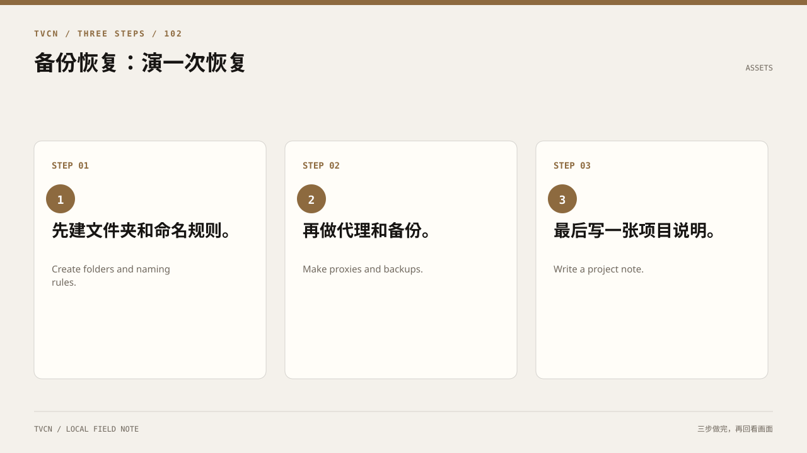

现场
3-2-1：三份、两种介质、一份异地；随机抽一个文件恢复到另一台机器，打开确认。
怎么做
备份不是复制完就算，随机抽一个文件恢复一次，才算验证。
- 按 3-2-1：三份、两种介质、一份异地。
- 随机抽一个文件恢复到另一台机器。
- 打开确认能播放或能回套，记录恢复耗时。
别踩
别只复制不恢复；坏盘不会提前通知你。
DIAGRAM / Assets
三步流程

3-2-1 落到桌面
三份：卡/机内、现场 SSD、备份盘；两种介质：SSD/HDD 或 LTO；一份异地：云或另一栋楼。不要把 RAID 当备份，它只防盘坏，不防误删、勒索和火灾。
- 拷卡后先做校验和，再格式化卡；没有两份可读副本，不要清卡。
- 现场 SSD 与备份盘分开供电、分开带走；不要放在同一个包里。
- 每天收工前看一次备份日志；失败要当场重跑，不要等回工作室。
恢复演练
- 随机抽一个文件，不要挑刚拷完的那个；从备份盘恢复到另一台机器。
- 打开或回套，确认能播放、能进 NLE；不要只看文件大小。
- 记录恢复耗时、路径、校验和；下次演练换一个人做。
恢复演练每季度一次；项目交付前至少做一次。
假备份
- RAID 当备份：阵列重建时再坏一块，数据全没；RAID 不是版本历史。
- 同步盘当备份：删了本地，云也删；同步不是备份。
- 只备份到同一栋楼：火灾/水灾一起没；异地必须真的异地。
- 只复制不校验：坏文件静默通过，直到打开才发现。
备份验收记录
- 三份副本、两种介质、一份异地都能指认；每份都有校验和。
- 随机文件在另一台机器恢复成功，能播放或回套。
- 恢复耗时、步骤、校验和有人记录；下次换人也能照做。
- 卡格式化前确认两份可读副本；备份日志无失败项。
恢复记录
每次演练记：日期、随机文件、来源盘、校验和、恢复到哪台机器、打开结果、耗时、操作人。没有打开结果的演练，不算通过。
图片说明：本页封面、图解与步骤图是编辑示意或结构图，不是本页实测照片，也不能当作器材测试证据；AI 辅助生成的图会在图注标出。判断器材或画面，以正文的测试条件与现场记录为准。